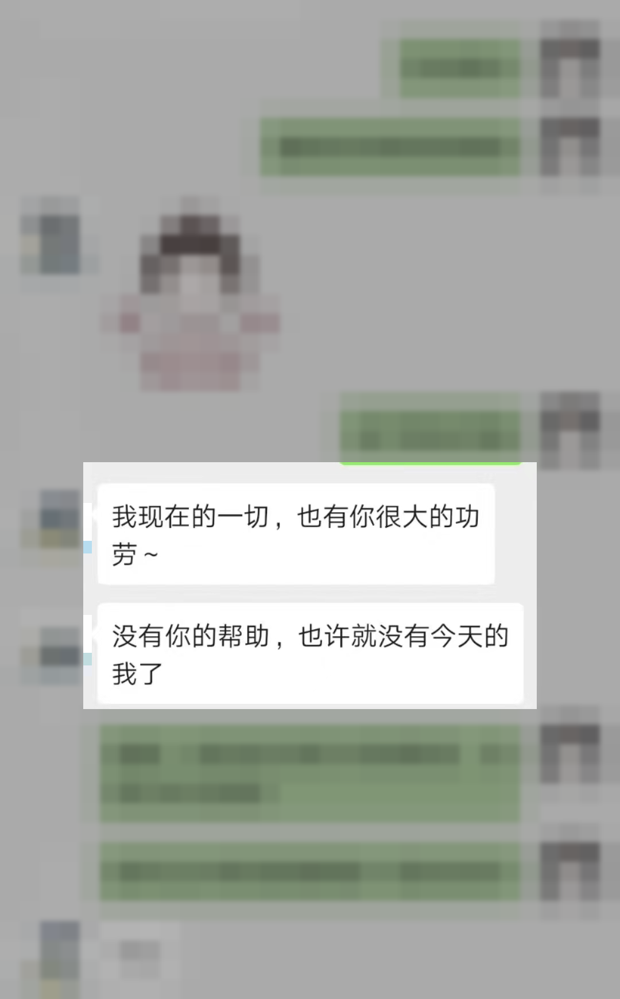

CASE 003 · 婚姻情感
工作上很理性，为什么一谈恋爱就失去判断？
你不是不聪明。只是进入亲密关系以后，害怕失去、害怕不被选择的部分被唤醒了，于是越在意，越容易把自己弄丢。
01 / 你是否也在关系里变了一个人
越想被爱，
越容易失去自己。
- 工作时清醒果断，进入关系后却反复猜测
- 对方一冷淡，就开始怀疑自己哪里不够好
- 明知应该建立边界，却总在关键时刻退让
- 把幸福寄托在遇到对的人，却忘了先稳住自己
02 / 渡月如何帮助这类人
不是替你决定去留，
而是把判断还给你。
我会先帮助你看见情绪是怎样劫持判断的，再练习表达需要、识别边界和观察真实的人。关系的目标不是抓紧谁，而是让你在爱里仍然是自己。
- 分清现实发生了什么，而不是只靠猜测
- 在情绪里把自己带回来
- 既能走进关系，也不为了爱丢掉自己

03 / 更多细节不公开
你需要看见方法和变化，不需要知道她是谁。
关系对象、职业背景、相识过程与咨询中的私人表达不会在网站展示。
START FROM THE REAL PROBLEM